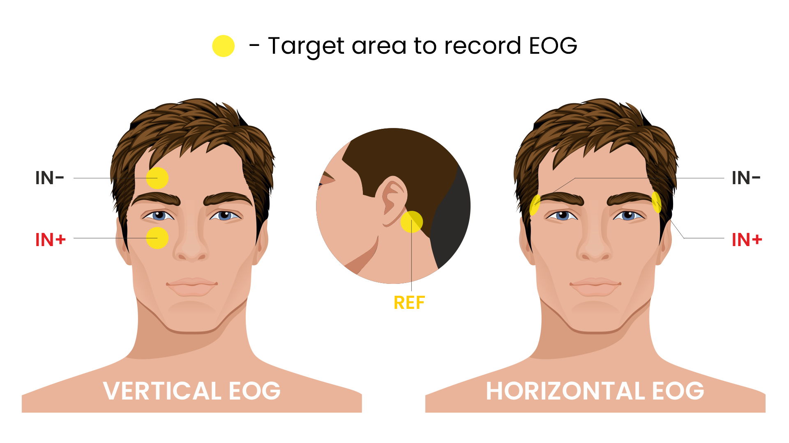
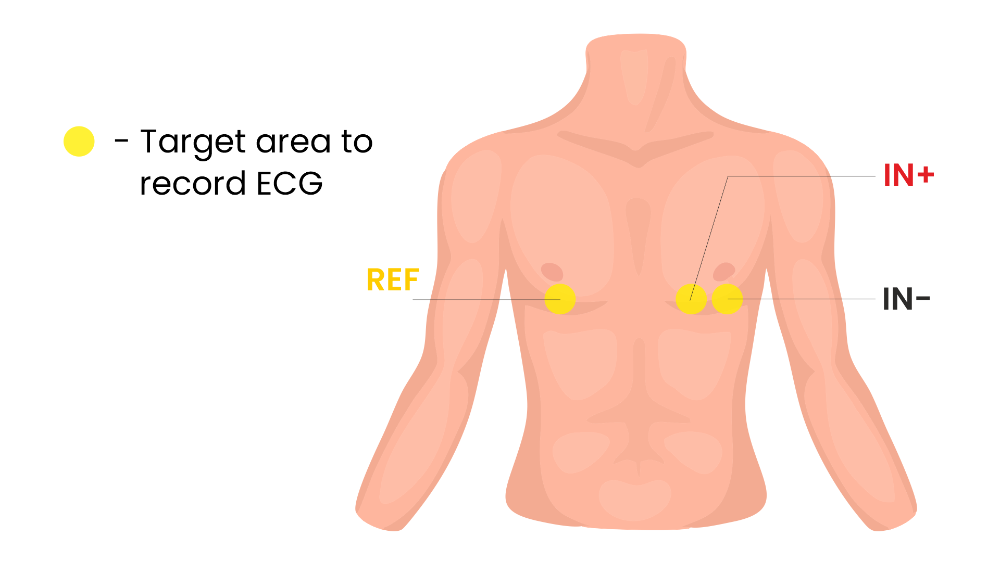
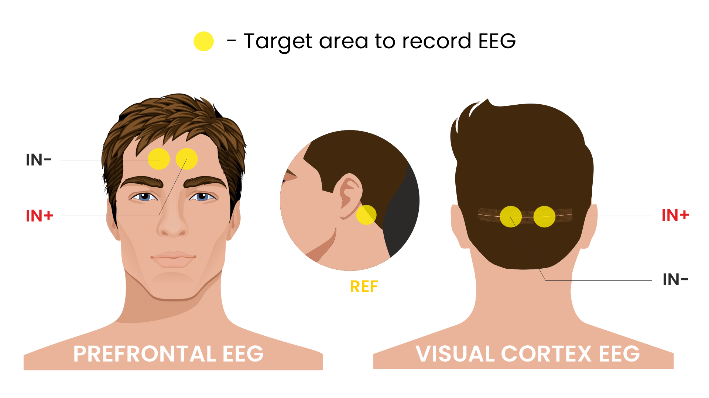
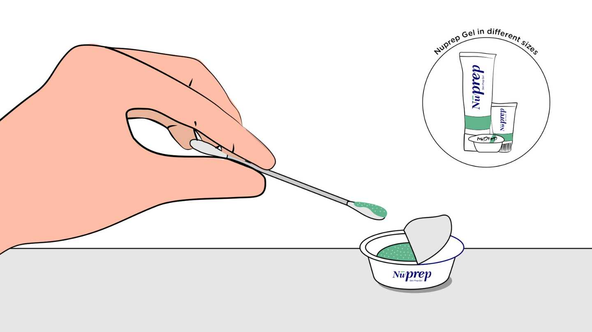
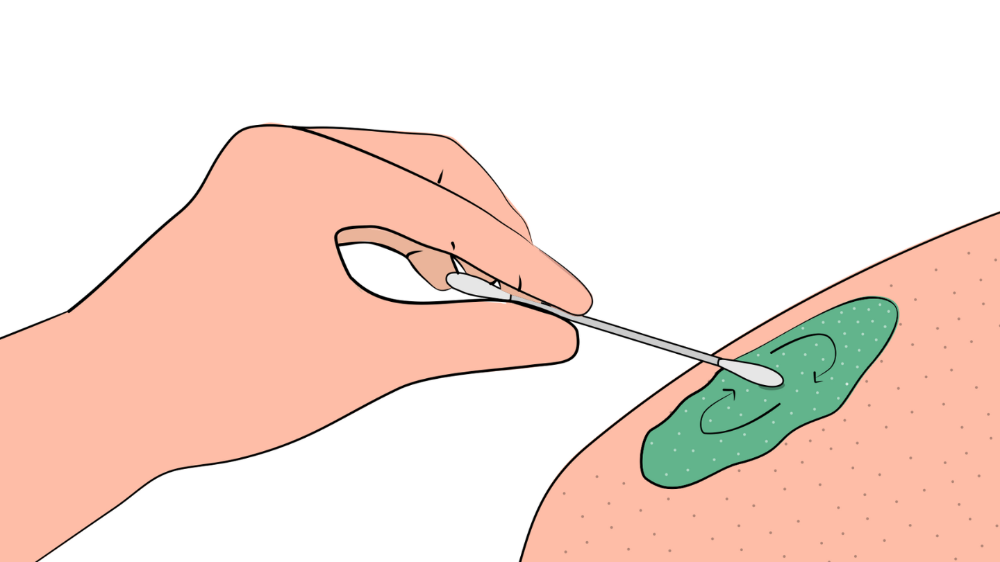
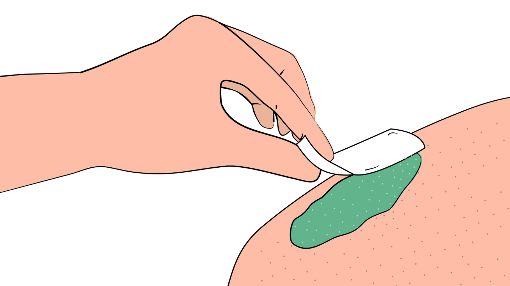
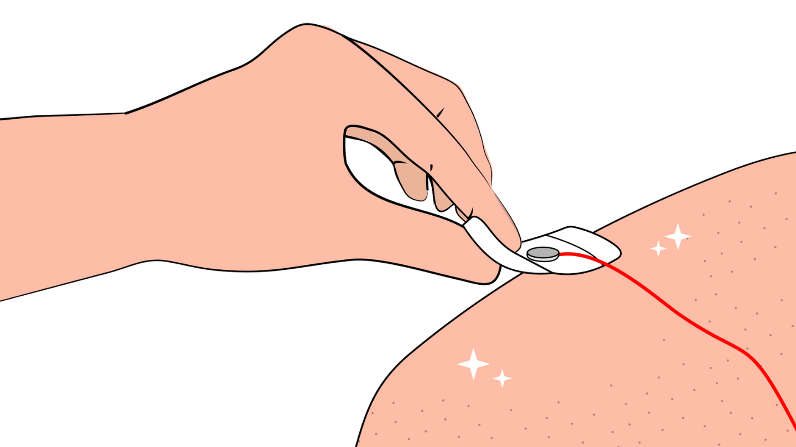
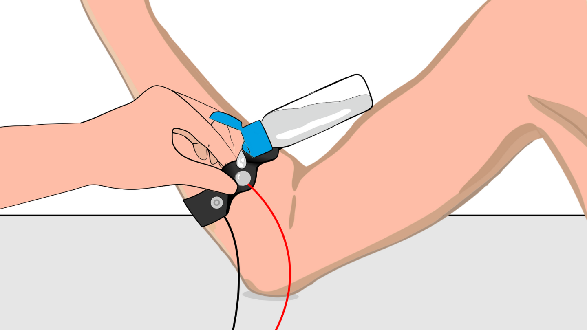

Modul 6: Sinyal Biopotensial#
Biopotensial adalah sinyal elektrik yang dihasilkan di dalam tubuh. Mereka berasal dari sel-sel eksitabel yang ditemukan di sistem saraf, otot, dan kelenjar. Ketika salah satu sel ini dirangsang, ia memicu potensial aksi atau potensial bergradasi. Potensial elektrik ini adalah blok bangunan dasar dari semua biopotensial di tubuh. [1]
Upside Down Labs telah merancang beberapa perangkat keras BioAmp Hardware dan BioAmp Software open-source untuk mengukur dan memvisualisasikan sinyal biopotensial tubuh. Sinyal ini termasuk:
Elektrokardiogram (ECG): Mengukur aktivitas elektrik jantung.
Elektromiogram (EMG): Merekam aktivitas elektrik yang dihasilkan oleh otot rangka.
Elektrookulogram (EOG): Mengukur potensial elektrik mata.
Elektroensefalogram (EEG): Menangkap aktivitas elektrik otak.
Perangkat BioAmp berfungsi sebagai katalis untuk pengembangan proyek Human-Computer Interface (HCI) dan Brain-Computer Interface (BCI) inovatif, memungkinkan orang menjelajahi bidang neuroscience.
6.1 Cara mengukur sinyal biopotensial#
Langkah 1: Persiapkan Kulit - mengurangi impedansi kulit
Langkah 2: Tempatkan Elektroda - memastikan lokasi sinyal yang benar
Langkah 3: Hubungkan Perangkat Keras - membentuk antarmuka elektrik antara elektroda dan sistem akuisisi
Langkah 4: Amplifikasi & Filter - meningkatkan sinyal lemah dan menghilangkan noise/interferensi
Langkah 5: Rekam & Visualisasikan - menangkap sinyal untuk pemantauan real-time dan analisis
Langkah 6: Analisis - menafsirkan data untuk mengekstrak informasi fisiologis yang bermakna
6.2 Panduan Persiapan Kulit#
6.2.1 Mengapa persiapan kulit penting?#
Persiapan kulit yang tepat sangat penting sebelum merekam sinyal biopotensial apa pun baik itu Elektrokardiografi (ECG), Elektromiografi (EMG), Elektroensefalografi (EEG), atau Elektrookulografi (EOG).
Bersihkan permukaan kulit: Menghilangkan sel kulit mati, minyak, & zat lain yang meningkatkan impedansi kulit.
Tingkatkan impedansi: Meningkatkan konduksi sinyal elektrik dari tubuh ke peralatan perekaman dan meminimalkan impedansi.
Kontak elektroda-kulit: Memastikan kontak optimal antara elektroda dan permukaan kulit.
Kualitas sinyal: Meningkatkan kualitas keseluruhan sinyal yang direkam, memberikan data yang jelas & andal untuk analisis & meningkatkan kemampuan untuk menangkap variasi halus dalam sinyal biopotensial.
Konsistensi dalam rekaman: Mengurangi variabilitas dalam kualitas sinyal, membuatnya lebih mudah untuk membuat proyek Human-Computer Interface (HCI), Brain-Computer Interface (BCI) atau aplikasi dunia nyata.
Adhesi jangka panjang: Memfasilitasi adhesi jangka panjang & penempatan stabil elektroda ke kulit selama pemantauan sinyal yang diperpanjang.
6.2.2 Langkah-langkah yang harus diikuti#
Anda dapat mengikuti langkah-langkah di bawah ini untuk melakukan persiapan kulit dengan benar :
Langkah 1: Identifikasi area target#
Identifikasi area target di mana elektroda gel atau BioAmp Bands akan ditempatkan untuk merekam sinyal biopotensial.
Elektrookulografi (EOG)#

Area target untuk merekam EOG#
Elektromiografi (EMG)#

Area target untuk merekam EMG#
Elektrokardiografi (ECG)#

Area target untuk merekam ECG#
Elektroensefalografi (EEG)#

Area target untuk merekam EEG#
Langkah 2: Oleskan gel NuPrep#
Ambil sedikit gel NuPrep menggunakan cotton swab dan oleskan pada area target Anda.

Mengoleskan Gel NuPrep#
Langkah 3: Bersihkan permukaan kulit#
Gunakan gerakan melingkar lembut untuk menggosok gel pada permukaan kulit. Ini menghilangkan semua sel kulit mati & meningkatkan konduktivitas.

Gosok gel dengan lembut menggunakan cotton swab#
Warning
Jangan menggosok gel terlalu lama karena memiliki sifat abrasif dan dapat menyebabkan kemerahan kulit dan iritasi.
Langkah 4: Lap gel#
Lap gel berlebih dengan alcohol swabs atau wet wipes.

Lap gel berlebih#
Warning
Menggunakan alcohol swabs dapat mengeringkan kulit, jadi jangan gunakan jika kulit Anda sudah kering.
Tutup mata Anda saat menggunakan alcohol swabs untuk perekaman EOG jika tidak dapat menyebabkan kemerahan mata & iritasi.
Langkah 5: Mengukur sinyal#
Sekarang Anda dapat menggunakan elektroda gel atau BioAmp bands untuk perekaman sinyal.
Menggunakan elektroda gel#
Hubungkan kabel BioAmp ke elektroda gel, kupas backing plastik dari elektroda dan tempatkan kabel IN+, IN-, REF sesuai dengan perekaman biopotensial spesifik Anda.

Menempatkan elektroda gel pada permukaan kulit#
Note
Saat menempatkan elektroda gel pada kulit, pastikan untuk menempatkan tab non-sticky elektroda ke arah berlawanan dengan pertumbuhan rambut Anda. Ini memungkinkan Anda menghilangkan elektroda dengan mudah tanpa menarik banyak rambut tubuh.
Untuk info detail tentang menggunakan elektroda gel, silakan lihat : Menggunakan Elektroda Gel
Menggunakan BioAmp bands#
Hubungkan kabel BioAmp ke BioAmp band Anda. Sekarang oleskan sedikit electrode gel atau Ten20 conductive paste pada elektroda kering antara kulit dan bagian metalik kabel BioAmp. Ini meningkatkan konduktivitas sinyal, meningkatkan kualitas sinyal keseluruhan.

Metode 1: Menggunakan Electrode gel#

Metode 2: Menggunakan Ten20 paste#
Untuk info detail tentang menggunakan BioAmp bands, silakan lihat : Menggunakan BioAmp Bands
6.3 Konfigurasi Elektroda Dasar#
6.3.1 Apa arti IN+, IN-, dan REF?#
Note
IN+ & IN- adalah dua input dari amplifier khusus yang digunakan oleh sebagian besar sistem perekaman biologis, disebut instrumentation amplifier. Instrumentation amplifier (In-Amp) untuk perangkat biomedis adalah amplifier gain tinggi yang dirancang untuk mengekstrak sinyal biologis lemah (tegangan instrumentasi) sambil menolak tingkat noise yang tidak diinginkan tinggi (tegangan common-mode).
IN+ (Input non-inverting)#
Input positif dari instrumentation amplifier
Ditempatkan langsung pada atau sangat dekat dengan jaringan yang menghasilkan sinyal (otot, jantung, dahi, mata, dll.)
Jika tegangan di sini meningkat, output amplifier meningkat.
IN- (Input inverting)#
Input negatif dari instrumentation amplifier
Ditempatkan 2-10 cm dari IN+ (otot yang sama, area umum yang sama) ATAU di sisi berlawanan (misalnya, untuk EOG/ECG)
Jika tegangan di sini meningkat, output amplifier menurun (diinversi).
REF (Mid-supply atau DRL)#
Ditempatkan di situs netral, elektrik tenang.
Ditempatkan pada area tulang jauh dari sumber sinyal (siku, tulang pergelangan tangan, pergelangan kaki)
Menghilangkan noise umum seperti noise 50/60 Hz yang muncul di kedua IN+ dan IN- .
Tip
Untuk panduan akuisisi sinyal yang lebih baik, lihat: Tips untuk akuisisi sinyal terbaik
Note
Untuk beberapa sistem REF dapat berarti elektroda negatif umum atau ground, untuk BioAmp kami menggunakan REF untuk menunjukkan elektroda mid-supply yang sama dengan BIAS pada sistem lain.
6.4 Ringkasan#
Dalam modul ini, kita belajar tentang sinyal biopotensial. Modul ini menjelaskan langkah-langkah pengukuran biopotensial, termasuk persiapan kulit dan penempatan elektroda. Kita juga mempelajari bagaimana perekaman instrumentation amplifier bekerja menggunakan IN+, IN-, dan REF untuk mendapatkan sinyal bersih, bebas noise. Di modul berikutnya Anda akan belajar cara merekam sinyal EMG di rumah dengan menggunakan perangkat keras BioAmp yang ramah anggaran dan perangkat lunak open source kami.
Warning
Rekaman ini hanya untuk penggunaan edukasi - bukan untuk diagnosis medis.